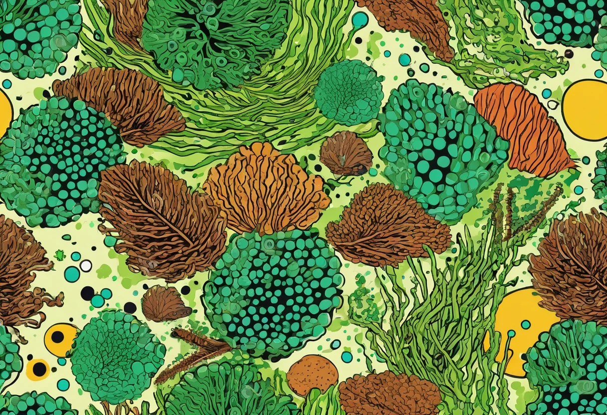

Aquarium Algenfresser im Porträt – Fische und Wirbellose
Algen sind der ewige Begleiter jedes Aquarianers. Mal sind sie nur ein leichter grüner Belag auf der Scheibe, mal überwuchern sie Pflanzen und Dekoration in dicken, unansehnlichen Teppichen. Der natürliche Feind der Algen – nein, nicht die Chemie – sind Algenfresser. Viele Fische, Garnelen und Schnecken haben sich im Laufe der Evolution auf den Verzehr von Algen spezialisiert. Sie sind die natürlichen Putzmannschaften deines Aquariums. In diesem Porträt stelle ich dir die wichtigsten und effektivsten Algenfresser vor – ihre Vorlieben, ihre Haltungsansprüche und wo ihre Grenzen liegen.
Wichtig vorweg: Algenfresser sind kein Allheilmittel gegen ein Algenproblem. Sie bekämpfen die Symptome, nicht die Ursache. Wenn dein Aquarium unter starkem Algenwachstum leidet, liegt das meist an einem Ungleichgewicht von Licht, Nährstoffen oder CO₂. Algenfresser helfen, das Algenwachstum zu kontrollieren und das Becken sauber zu halten, aber sie ersetzen keine Problemanalyse. Wer Algenfresser als „Problemlöser“ kauft, ohne die Ursache zu beheben, wird enttäuscht werden – die Algen wachsen schneller, als alle Tiere der Welt sie fressen können.
Die effektivsten algenfressenden Fische
Otocinclus (Ohrgitterharnischwels)
Otocinclus sind die wohl beliebtesten Algenfresser im Süßwasseraquarium. Die kleinen, max. 5 Zentimeter großen Welse aus Südamerika sind friedlich, gesellig und unermüdlich im Kampf gegen Braunalgen und weiche Grünbeläge. Sie saugen mit ihrem speziell angepassten Maul Algen von Scheiben, Pflanzenblättern und Dekoration ab. Otocinclus sind ausgesprochene Friedfische und müssen in einer Gruppe von mindestens 5 bis 7 Tieren gehalten werden. Einzelhaltung führt zu Stress und frühem Tod. Ihr Magen ist klein – sie fressen fast ununterbrochen. Ein gut eingefahrenes Aquarium mit einem gesunden Algenbesatz ist für sie ideal. Bei Futterknappheit nimmst du überbrühte Zucchinischeiben oder spezielle Algentabs als Ergänzung. Wichtig: Otocinclus reagieren empfindlich auf schlechte Wasserqualität und Medikamente. Ein gut bepflanztes Aquarium mit stabilen Werten ist die beste Voraussetzung für ihre Haltung.
Antennenwelse (Ancistrus)
Ancistrus ist eine Gattung, keine einzelne Art. Die Endgröße und Haltungsansprüche nicht von einem beliebigen Antennenwels auf alle anderen übertragen. Für das konkret als Ancistrus cirrhosus beschriebene Tier nennt die Fluval-Arteninformation überwiegend pflanzliche, aber vielseitige Nahrung, Holz, zahlreiche Verstecke und sauerstoffreiches Wasser. Sie warnt außerdem vor Aggression zwischen Männchen bei unzureichendem Platz. Daraus folgt keine pauschale Freigabe für ein Paar in 100 Litern oder die Vergesellschaftung mit beliebigen Fischen. Artbestimmung, ausgewachsene Tiere, nutzbare Bodenfläche, Rückzugsmöglichkeiten und vorhandenen Besatz vor dem Kauf prüfen. Algenbeläge ersetzen keine geplante artspezifische Fütterung; geeignete sinkende Futtermittel müssen die Tiere auch tatsächlich erreichen.
Siamesische Rüsselbarben: Artbestimmung vor Algenversprechen
Unter „Siamesische Rüsselbarbe“ beziehungsweise SAE werden ähnlich aussehende Fische angeboten. FishBase dokumentiert die Namensverwechslungen und verweist bei Rotalgenfraß auf Crossocheilus langei; ein Verkaufsschild „C. oblongus“ garantiert weder die Bestimmung noch eine bestimmte Algenwirkung. Für C. oblongus nennt FishBase bis 16 cm Standardlänge, also ohne Schwanzflosse. Diese aktiven Fische nicht als kurzfristiges Pinselalgenmittel zukaufen. Zuerst die Art verlässlich klären und dauerhaft passenden Schwimmraum, Sozialverband, Wasser und Fütterung planen; keine pauschale Gruppenzahl ersetzt diese Prüfung.
Wabenschilderwels (Pterygoplichthys gibbiceps)
Pterygoplichthys gibbiceps, früher auch unter Glyptoperichthys gibbiceps geführt, wird sehr groß: FishBase nennt 50 cm Gesamtlänge (TL), also einschließlich Schwanzflosse. Die bisherige Angabe von 45 cm war als maximale Größe zu niedrig. Eine Literzahl wie 400 Liter allein weist keine passende Haltung nach; Beckenlänge, Breite, Einrichtung, Rückzugsraum und Mitbewohner müssen für das ausgewachsene Tier passen. Die Art wird als nachtaktiver Algenfresser beschrieben, ist aber keine Lösung für ein kleines Aquarium mit Algenproblemen. Eine dauerhaft geeignete Unterbringung muss vor dem Kauf feststehen. Nicht darauf vertrauen, später schon einen Abnehmer oder ein größeres Becken zu finden. Zur Artbestimmung und Größenplanung siehe auch den Wels-Ratgeber.
Wirbellose Algenfresser – klein, aber effektiv
Amano-Garnelen (Caridina multidentata)
Amano-Garnelen (Caridina multidentata) weiden unter anderem Algen und Aufwuchs ab, sind aber kein garantiertes Pinselalgenmittel. Die Fluval-Arteninformation empfiehlt Gruppenhaltung, Verstecke und kleine friedliche Mitbewohner. Gerade während der Häutung sind sie durch Fische gefährdet. Auch bei friedlich wirkenden Arten gibt es keine pauschale Garnelenverträglichkeit. Ihre Fütterung und dauerhafte Haltung müssen unabhängig vom aktuellen Algenbefall gesichert sein.
Red Cherry und andere Zwerggarnelen
Red-Cherry-Garnelen sind eine Farbform von Neocaridina davidi. Die University of Florida IFAS beschreibt erwachsene Tiere mit bis zu etwa 3–4 cm und eine vielseitige Nahrung aus unter anderem Algen, Biofilm und organischem Material. Eine feste Zahl von 10–20 Garnelen garantiert keine Kontrolle des Algenbelags. Sie können sich im Süßwasser vermehren; Nachwuchs und dauerhafte Versorgung gehören deshalb zur Planung. Auch die frühere pauschale Empfehlung „ideal ab 20 Litern“ ersetzt keine Prüfung von Wasserstabilität, Technik und Besatz.
Der Aqueon-Leitfaden zu Süßwassergarnelen empfiehlt eingefahrene, stabile Aquarien, Pflanzen und einen gegen Einsaugen geschützten Filtereinlass. Garnelen können von Fischen gefressen werden; „friedlich“ ist keine Garantie für ihre Sicherheit. Ein passend eingerichtetes Artenbecken vermeidet dieses Fisch-Prädationsrisiko. Verträglichkeit von Medikamenten und anderen Zusätzen für Garnelen ausdrücklich prüfen, insbesondere kupferhaltige Behandlungen nicht ungeprüft anwenden. Nicht jede Produktkategorie enthält dieselben Wirkstoffe oder Konzentrationen.
Posthornschnecken (Planorbarius corneus)
Schnecken sind die heimlichen Helden der Algenbekämpfung. Posthornschnecken sind besonders effektiv gegen weiche Grünalgen und Futterreste. Sie haben ein charakteristisches, flach gewundenes Gehäuse und werden 2 bis 3 Zentimeter groß. Sie sind friedlich, vermehren sich bei guter Fütterung mäßig (nicht so stark wie Blasenschnecken) und sind ausgezeichnete Indikatoren für die Wasserqualität. Bei Sauerstoffmangel steigen sie an die Oberfläche und zeigen dies deutlich an. Posthornschnecken sind Zwitter, können sich aber nicht selbst befruchten – du brauchst also mindestens zwei Exemplare für eine stabile Population. Sie sind ideal für jedes Gesellschaftsbecken.
Turmdeckelschnecken (Melanoides tuberculata)
Turmdeckelschnecken sind spezialisiert auf eine andere Aufgabe: Sie lockern den Bodengrund, fressen Mulm und abgestorbene Pflanzenreste und verbessern die Durchlüftung des Bodens. Sie sind nachtaktiv und leben die meiste Zeit im Bodengrund, wo sie unermüdlich organisches Material verwerten. Sie vermehren sich im Süßwasser, aber die Population reguliert sich normalerweise selbst. Turmdeckelschnecken sind ideale Bodengrundpfleger, die das Substrat sauber und locker halten. Sie sind friedlich und mit allen Aquarienbewohnern verträglich.
Rennschnecken – die Putzkräfte der Scheiben
Rennschnecken (Neritina-Arten) sind die Spezialisten für Kieselalgen und Grünbelag auf den Aquarienscheiben. Sie haben ein hübsches, schwarz-gelb gestreiftes oder gepunktetes Gehäuse und werden etwa 2 bis 3 Zentimeter groß. Rennschnecken sind sehr effektiv und unermüdlich – sie „rasen“ förmlich über die Scheiben und hinterlassen blitzblanke Bahnen. Im Süßwasser können sie sich nicht vermehren, da ihre Larven Brackwasser brauchen. Sie sind ideal für Aquarien, die zur Kieselalgenbildung neigen (häufig in der Einfahrphase). Rennschnecken sind völlig friedlich und mit allen Fischen verträglich. Achte darauf, dass das Becken nicht aus dem Wasser ragt oder gut abgedeckt ist – Rennschnecken sind bekannt dafür, auszubrechen und auszutrocknen.
Die richtige Kombination verschiedener Algenfresser
Ein pauschales „Putzteam“ für 20 oder 100 Liter ist keine verantwortliche Besatzplanung. Wähle Tiere nach ihrer Art, Endgröße, Gruppenzusammensetzung, Nahrung und den vorhandenen Mitbewohnern, nicht nach einer gewünschten Reinigungsleistung. Bei Pinselalgen nicht einfach weitere Rüsselbarben ergänzen. Erst Ursache und Pflege prüfen; zusätzliche Tiere erhöhen auch die Belastung des Aquariums.
Grenzen der Algenbekämpfung durch Tiere
Algenfressende Tiere ersetzen keine passende Pflege. Bei starkem Befall zuerst Licht, Pflanzenentwicklung, gemessene Nährstoffe, Fütterung und Filterfunktion prüfen. Algen allein beweisen keinen CO₂-Mangel: Nicht auf Verdacht die Gaszufuhr erhöhen. Licht und Düngung anhand des tatsächlichen Bedarfs anpassen, lose Beläge beziehungsweise abgestorbenes Material entfernen und Veränderungen beobachten. Zusätzlicher Besatz ist keine Abkürzung zur Ursachenklärung.
Algenfresser sind die Polizei, nicht die Armee. Sie können eine stabile Ordnung aufrechterhalten, aber keinen Aufstand niederschlagen. Bekämpfe die Ursache, nicht die Symptome.
Pflege und Fütterung von Algenfressern
Plane die Fütterung nach der bestimmten Art, nicht nach dem Sammelbegriff „Algenfresser“. Für die hier beschriebenen Ancistrus und Neocaridina reichen sichtbare Algen oder Futterreste anderer Tiere nicht als Nachweis einer vollständigen Versorgung. Passende Futtermittel gezielt anbieten und beobachten, ob jedes Tier Nahrung erhält. Menge an tatsächliche Aufnahme und Wasserbelastung anpassen; nicht gefressenes, verderbliches Futter zeitnah entfernen. Eine starre Wartefrist von 24 Stunden ist dafür keine allgemeine Regel.
Kontrolliere Futteraufnahme und Ernährungszustand regelmäßig. Ein eingefahrenes Aquarium kann Aufwuchs bieten, garantiert aber weder ausreichende Menge noch passende Zusammensetzung für alle Tiere. Bei ausbleibender Futteraufnahme oder Abmagerung Ursache klären und bei Bedarf fischkundige tierärztliche Hilfe beziehungsweise qualifizierte Wirbellosenberatung hinzuziehen. Tiere nicht hungern lassen, damit sie mehr Algen fressen.
🛒 Algenfresser – Zubehör und Futter
Mit der richtigen Ausstattung unterstützt du deine Algenfresser bei ihrer wichtigen Arbeit:
Fazit – Algenfresser sind Helfer, nicht Retter
Nicht jedes Aquarium braucht zusätzliche algenfressende Tiere. Entscheide zuerst, ob eine bestimmte Art dauerhaft zu Wasser, Platzangebot und Mitbewohnern passt. Erst danach spielt ihre mögliche Wirkung auf einzelne Beläge eine Rolle. Pflege, Wasserwechsel und Ursachenklärung bleiben Aufgaben des Halters; Tiere sind kein austauschbares Reinigungspersonal.
Mehr zur Algenbekämpfung und zu den Ursachen von Algenwachstum findest du in unserem Artikel Algen im Aquarium erkennen und bekämpfen. Und wenn du mehr über Garnelen als Algenfresser erfahren möchtest, lies unseren Garnelen-Guide.
🐾 Auch interessant: Du interessierst dich für Haustiere? Auf haustierzentrum.com findest du Ratgeber zu Hunden, Katzen, Kleintieren und mehr – von der Anschaffung bis zur Pflege.